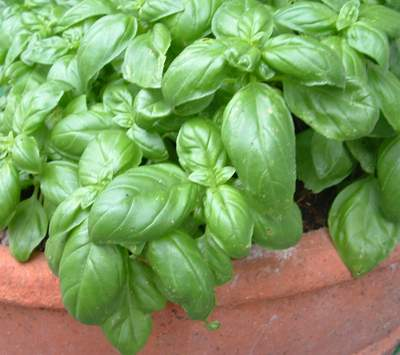

Pochierte Pouletbrust an Basilikumsauce
5 von 6Im einer selbst zubereiteter Bouillon pro Person 1-2 Pouletbrüste bei geringer Hitze ca. 1 Stunde ziehen lassen.
Für die Sauce: 2 Dl Bouillon abschöpfen und auf die Hälfte einkochen, in einen hohen Behälter geben. Eine Knoblauchzehe, viel Basilikum und Peterli, 6 EL Mascarpone, 4 EL Mayo dazu geben und alles gut pürieren. Mit Salz, Pfeffer und etwas Zitronensaft abschmecken. Über das tranchierte Poulet mit Wildreis servieren.
